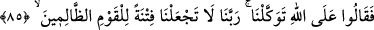
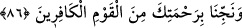

defetmenin de O’nun gücü dahilinde olduğunu öğrendiyseniz “ve O’na teslim
olduysanız” O’nun hükmüne ihlaslı bir şekilde teslim olanlardan iseniz “sâdece O’na
tevekkül edin” güvenin, itimat edin, O’ndan başka hiç kimseden korkmayın.
Âyet tevekkülün iki şart bir araya geldiğinde vâcib olduğu mânâsına gelmez. Bu iki
şart ise îmân ve İslâm’dır. Yoksa sadece Allah’a îmân etme durumunda tevekkül vâcib
olmazdı. Bilakis onlar, her biri başlı başına bir şarta bağlı iki hükümdür.
Tevekkülün vâcib olması Allah’a îmâna bağlanmıştır. Çünkü tevekkülü gerektiren şey
O’na inanmaktır. Allah’a tevekkülün hâsıl olması ise O’nun hükmüne teslim olmaya
bağlanmıştır. Çünkü İslâm; teslim olma, başkalarına da güvenip dayanma ile bir arada
bulunamaz. Bunun benzeri şu sözdür: Zeyd sana iyilikte bulunursa, gücün yeterse sen de
ona iyilikte bulun.
Bazıları der ki: “Nuh (a.s.) özel olarak sadece kendisini tevekkül ile vasfederek
“sadece Allah’a tevekkül ederim.” (Yûnus, 10/71) demiştir. Musa (a.s.) ise bunu
kavmine emretmiştir. Buradan Musa (a.s.)’ın derecesinin Nuh (a.s.)’ın derecesinden
yüksek olduğu ortaya çıkmaktadır.”
Fakir (Bursevî) ise şöyle der: “Birinci kıssada Nuh (a.s.)’dan bahsediliyordu.
İkincisinde ise Musa (a.s.)’ın kavminden bahsedilmektedir. Bu sebeple Nuh (a.s.)
Allah’a tevekkülü sadece kendisine izafe etti. Musa (a.s.) ise Allah’a tevekkülü
kavmine emretti. Bu, Musa (a.s.)’ın derecesinin Nuh (a.s.)’ın derecesinden yüksek
olmasını gerektirmez. Çünkü akıl sâhibi kişilerin kolayca anlayacağı gibi her birinin
nokta-i nazarı farklıdır.
85. Onlar da dediler ki: “Sadece Allah’a tevekkül ettik. Ey Rabbimiz, bizi o
zulmeden kavim için imtihan vesilesi yapma.”
“Onlar da” fazla oyalanıp beklemeden Musa (a.s.)’a cevaben “dediler ki: “Sadece
Allah’a tevekkül ettik.” Çünkü onlar mü’min ve ihlaslı kimselerdi. Bu sebeple de
dualarına icabet edildi. Sonra Rablerine şöyle dua ettiler: “Ey Rabbimiz, bizi o
zulmeden kavim için imtihan vesilesi yapma.” Onları bize işkence edip dinimizden
döndürmeleri için başımıza musallat ederek bizi onların işkence ettikleri kişiler yapma.
86. “Rahmetinle bizi o inkarcı toplumdan kurtar.”
“Rahmetinle bizi o inkarcı toplumdan” onların hilelerinden, onları görme
uğursuzluğundan ve onlara komşu olmanın kötülüğünden “kurtar.”